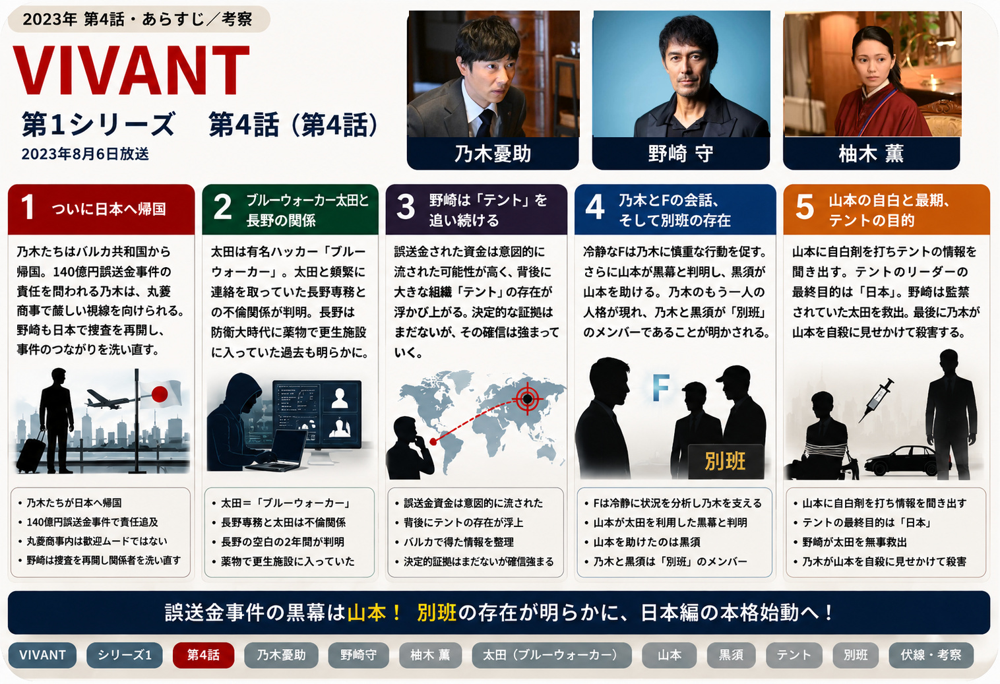
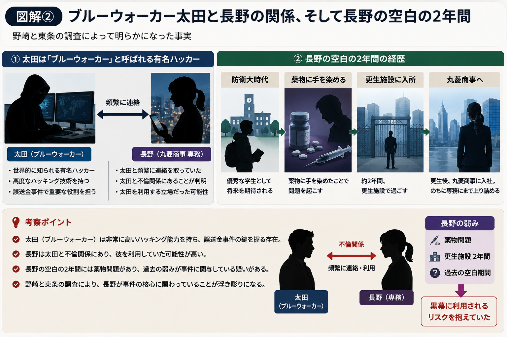
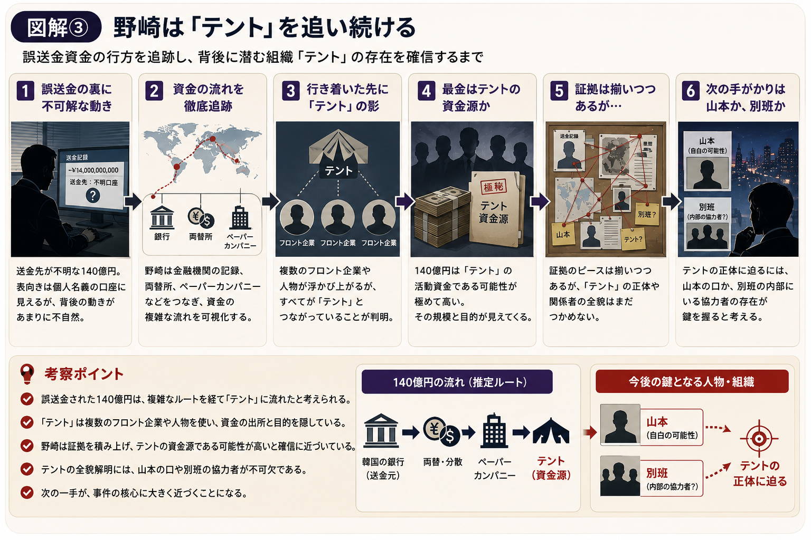
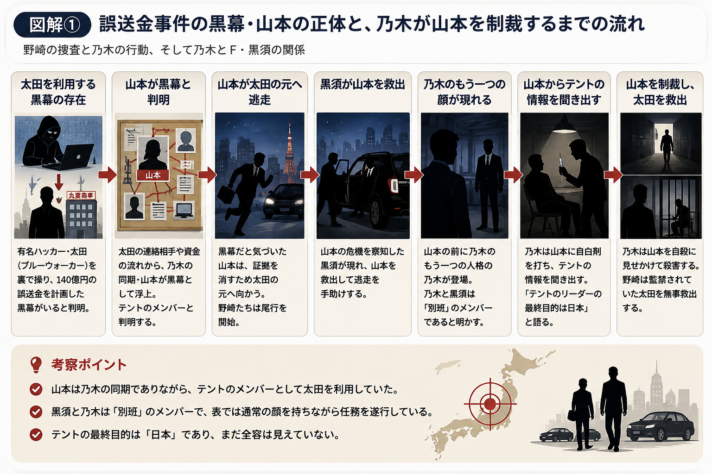

VIVANT 第4話｜山本の正体が判明
乃木・黒須＝「別班」が明らかに
バルカから日本へ戻った乃木たち。誤送金事件の捜査は太田梨歩、長野専務、そして乃木の同期・山本へとつながり、物語は大きく反転します。第4話のあらすじ・人物関係・伏線・考察を、見返しながら整理します。

1. ついに日本へ帰国
第4話は、乃木たちがバルカ共和国から無事に帰国するところから始まります。
長い逃亡生活を終えたものの、乃木に休む時間はありません。丸菱商事では140億円もの誤送金事件の責任者として厳しい視線を向けられ、社内の空気は決して歓迎ムードではありませんでした。
一方、野崎も公安として日本での捜査を再開します。バルカで起きた爆破事件と誤送金事件は、日本国内にもつながっていると確信し、改めて関係者を洗い直し始めます。
2. 有名ハッカー・ブルーウォーカーの登場
野崎と東条は、太田梨歩が「ブルーウォーカー」と呼ばれる有名ハッカーであることを突き止めます。
しかし、太田とテントの直接的なつながりは見つかりません。そこで野崎は、太田と頻繁に連絡を取っていた人物に連絡し、待ち合わせをすることにします。
そこにやって来たのは、丸菱商事の専務・長野でした。野崎が太田との関係を問いただすと、二人は不倫関係にあったことが判明します。
さらに野崎は、長野の経歴にある「空白の2年間」に踏み込みます。長野は、防衛大学校時代に薬物に手を染め、2年間更生施設に入っていたと明かしました。

3. 野崎は「テント」を追い続ける
野崎は日本へ戻っても、捜査の軸を変えません。公安として追っている国際テロ組織「テント」と、誤送金事件との関係を調べ続けます。
バルカ共和国で得た情報を整理すると、誤送金された資金は単なる企業間の取引ではなく、何者かによって意図的に流された可能性が高いことが見えてきます。
まだ決定的な証拠はないものの、事件の裏には大きな組織が存在しているという確信が強まっていきます。

4. 乃木とFの会話
日本へ戻っても、「F」は乃木の前に現れ続けます。
会社では穏やかな商社マンとして振る舞う乃木ですが、頭の中ではFが冷静に状況を分析しています。
「相手が動くのを待て。」
Fは感情ではなく合理的な判断を優先し、乃木に慎重な行動を促します。
この場面を見ると、乃木は表向きの穏やかな性格と、Fの冷静な判断力の両方を持ちながら行動していることがよく分かります。
5. 薫とジャミーンの日本での生活
ジャミーンとドラムが来日し、乃木は薫に、ジャミーンの手術費用を集めるためクラウドファンディングを提案します。
バルカで命を懸けて行動を共にした人たちが日本でもつながり続けていることが分かる場面で、緊張感の強い捜査パートの中に温かさを残しています。
6. 野崎と乃木、少しずつ変わる関係
バルカ共和国では、互いを利用し合うような関係だった二人。しかし日本へ戻ると、同じ事件を追う立場として接する機会が増えていきます。
野崎は依然として「乃木は普通の商社マンではない」という疑いを持っています。
一方で、命を懸けてジャミーンを助けた姿を見ているため、「敵ではない」という思いも芽生え始めています。
信頼と疑念、その両方を抱えたまま、二人の距離は少しずつ縮まっていきます。
7. 誤送金事件の裏側、真犯人が判明・黒幕の殺害
事件を追う中で、140億円の誤送金は偶然ではなく、誰かが綿密に準備した計画だった可能性がさらに高まります。送金先、資金の流れ、関係企業。調べるほど新たな疑問が生まれ、事件の規模は想像以上に大きいことが見えてきます。
長野が黒幕ではないと分かり、野崎は乃木に指示を出します。乃木は山本の協力で原部長、宇佐美部長、水上を呼び出し、3人に「公安が疑っている」と告げます。
しかし本当は、乃木はジャミーンのアルバムに山本が写っていることを見つけていました。乃木と野崎は、太田を利用した黒幕が山本であると見抜いていたのです。
山本は慌てて太田の元へ向かい、野崎たちはその後を尾行します。
そんな山本を助けたのが黒須でした。そして山本の前には、普段の穏やかな商社マンとはまるで違う表情を見せる乃木が現れます。ここで乃木と黒須が仲間であり、二人とも「別班」のメンバーであることが明かされます。
乃木は、これまでずっと仕事ができないように見せかけながら行動していました。山本に自白剤を打ち、テントについて問い詰めます。
山本は、アリのもとで訓練を受けたこと、そしてテントのリーダーの最終目的が「日本」であることを口にします。一方で、テントのリーダーが誰なのかについては「知らない」の一点張りでした。
その頃、野崎は山本が監禁していた太田を無事に救出します。
そして乃木は、「この美しき我が国を汚すものは許さない」と告げ、山本を自殺に見せかけて殺害したのでした。

8. 次の展開への布石
第4話は、海外での逃亡劇から日本での情報戦・心理戦へと舞台が完全に切り替わる重要な回です。
特に大きいのは、誤送金事件の黒幕が山本だったこと、山本がテント側の人間だったこと、そして乃木と黒須が「別班」のメンバーだと明らかになったことです。
ここまで視聴者が抱いていた「乃木は本当に普通の商社マンなのか」という疑問に、ついに明確な答えが示されます。一方で、テントのリーダーや組織の全貌、「最終目的は日本」という言葉の意味はまだ見えていません。
第5話以降は、誤送金事件の真相だけでなく、「別班」と「テント」という二つの組織の対立が本格的に物語の中心へ入っていくことになります。
第4話で新たに分かったこと
| 項目 | 第4話終了時点 |
|---|---|
| 太田梨歩 | 「ブルーウォーカー」と呼ばれる有名ハッカー |
| 長野専務 | 太田と不倫関係。経歴の空白2年間は更生施設にいた |
| 山本 | 太田を利用した黒幕で、テントのメンバー |
| 黒須 | 乃木の仲間として登場し、別班のメンバーと判明 |
| 乃木 | 普通の商社マンではなく、別班のメンバーであることが明らかになる |
| テント | 最終目的が「日本」であると山本が証言 |
| 物語 | 日本での捜査から、別班とテントの対立へ大きく進む |
第4話の見どころ・伏線・考察
第4話は、バルカ共和国での逃亡劇を終え、日本を舞台にした新たな展開の幕開けとなる回です。派手な逃亡劇は落ち着きますが、その分、誤送金事件の背景や登場人物同士の駆け引きが一気に深まります。
中でも最大の見どころは、これまで伏せられていた乃木の正体です。山本を追い詰める場面で黒須が登場し、乃木と黒須が「別班」のメンバーであることが明らかになります。乃木がこれまで見せてきた異常なほどの冷静さや判断力が、ここで一つにつながります。
また、太田が「ブルーウォーカー」と呼ばれる有名ハッカーだったこと、太田を利用していたのが乃木の同期・山本だったことも重要です。誤送金事件は単なる社内犯罪ではなく、テントへとつながる組織的な事件だったことがはっきりしてきます。
一方、野崎は乃木を完全には信用していません。それでもバルカでの行動を見てきたことで、以前のように単純な容疑者としては見なくなっています。この「信頼と疑念が同居する関係」が、今後の乃木と野崎を考えるうえでも大きなポイントです。
・太田は「ブルーウォーカー」と呼ばれる有名ハッカー。
・太田を利用していたのは乃木の同期・山本で、「テント」のメンバーと発覚。
・山本を助けた黒須、そして乃木が「別班」のメンバーであることが判明。